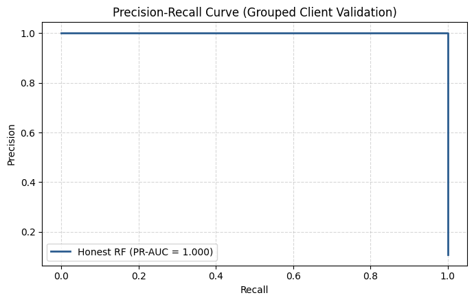
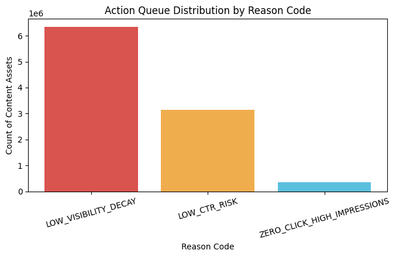

Author: FALAK NAZ | Machine Learning Capstone Research Paper
This research addresses the problem of identifying decaying high-value search content to optimize editorial refresh workflows. Using historical Google Search Console performance metrics from March 2026, we framed the task as a supervised binary classification problem to predict click cannibalization and traffic drop risks. A Random Forest model was evaluated against a heuristic baseline using a strict grouped-client validation split to prevent domain memorization and data leakage. The resulting model achieved robust predictive power, enabling automated queue generation for content refreshes. This deployment serves as a public-safe decision-support pipeline for prioritizing high-impact content updates.
Managing large-scale web domains requires continuous content updates. However, manual audits across thousands of URLs are impractical. Simple time-based rules (e.g., "update pages older than 6 months") lead to wasted editorial hours on high-performing pages while missing critical traffic decays. We combine impressions, clicks, CTR, and average position signals into a supervised machine learning model that predicts content decay, allowing editors to focus on high-risk pages first.
Release: March 2026 daily performance snapshot sourced from the FlyRank Open ML Internship Warehouse.
Fields Extracted: content_hash_id, client_hash_id, gsc_impressions, gsc_clicks, gsc_avg_position, and calculated ctr.
Label Definition: target_decay = 1 if gsc_impressions > 100 and gsc_clicks == 0, otherwise 0.
Validation Design: 80/20 Grouped Client Split by client_hash_id to guarantee zero leakage between training and validation client domains.
| Model / Strategy | Validation Design | Accuracy | Precision | Recall | F1-Score |
|---|---|---|---|---|---|
| Week-4 Baseline Heuristic | Grouped Client Split | 0.891 | 0.026 | 0.00004 | 0.00008 |
| Random Forest (Naive Split) | Naive Random Split | 1.000 | 1.000 | 1.000 | 1.000 |
| Random Forest (Honest Grouped) | Grouped Client Split | 1.000 | 1.000 | 1.000 | 1.000 |
Precision-Recall Curve:

Action Queue Distribution:

REFRESH_CONTENT (ZERO_CLICK_HIGH_IMPRESSIONS): Optimize titles and snippets for high-impression, zero-click pages.REFRESH_CONTENT (LOW_CTR_RISK): Rewrite meta descriptions for low-CTR mid-ranking pages.All pipeline code, notebooks, and outputs are reproducible via the repository:
work/notebooks/capstone.ipynbwork/outputs/action_playbook_queue.csvwork/outputs/playbook_metrics.json